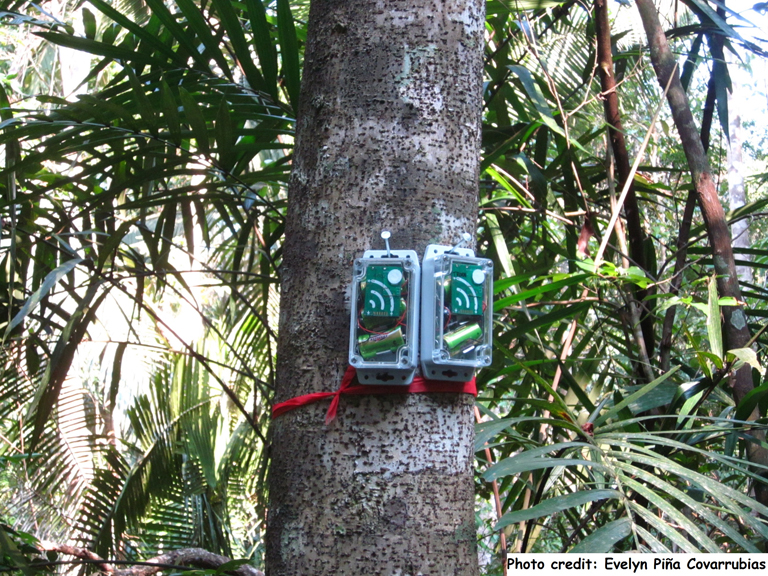
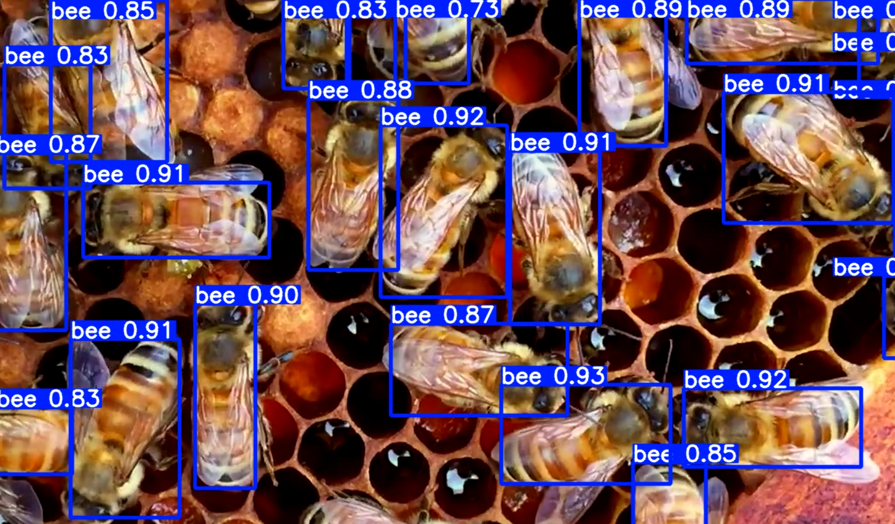
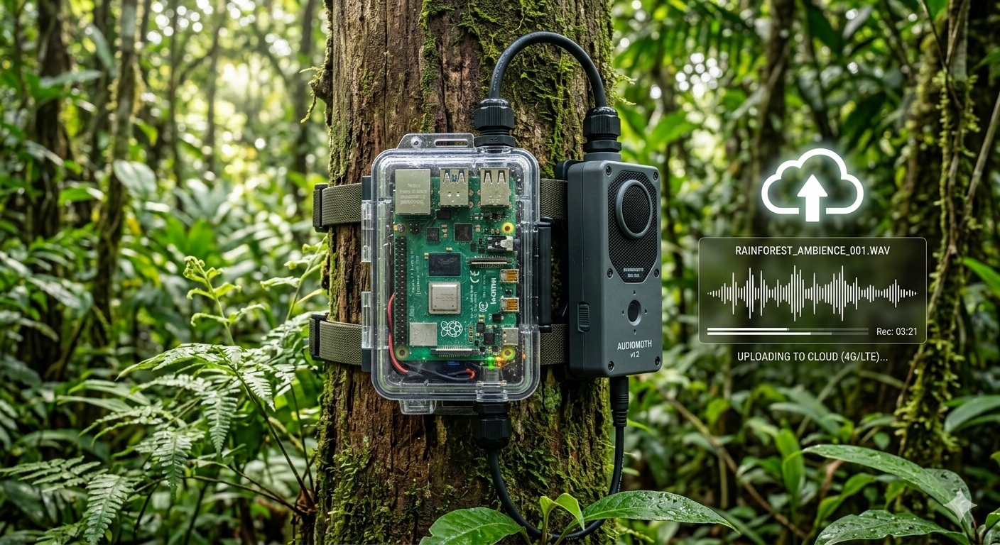
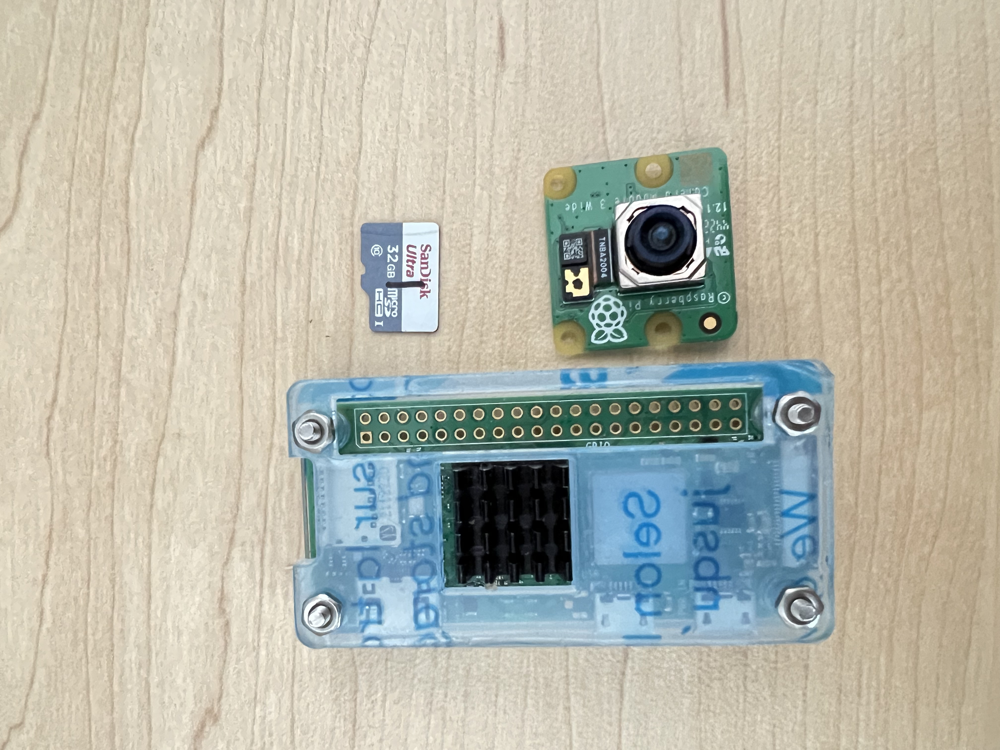
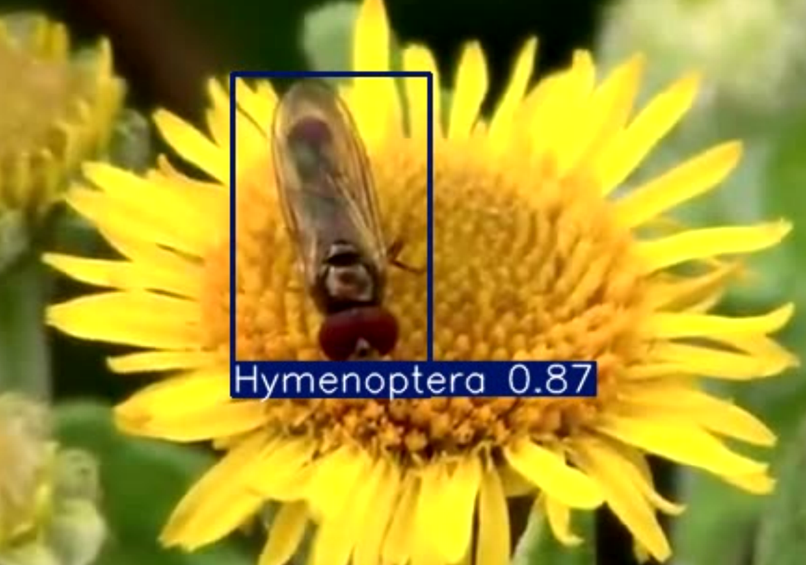

Engineering
biological intelligence.
A professional portfolio of end-to-end data science solutions designed to monitor, protect, and understand our natural world through advanced ML and IoT.

Target Species Detection Pipeline
An end-to-end automated workflow for biodiversity monitoring using Passive Acoustic Monitoring (PAM). This system focuses on the precision detection of target species, integrating signal preprocessing and deep learning to filtrate wildlife recordings at scale.
Automated Apicultural Analytics
Advanced biological monitoring framework leveraging **YOLOv8** for precision apiculture. By integrating sophisticated object tracking, the system identifies specific bee phenotypes while filtering for predatory species like Vespula.
Launch Case Study →

Cloud-Integrated Bioacoustic Acquisition
Engineered an autonomous, real-time data acquisition pipeline for remote monitoring. Orchestrates continuous 10-minute acoustic sampling with automated cloud synchronization via Google Drive API.
Technical Overview →
Edge AI for Wildlife Alerts
Low-cost avian detection system deployed on Raspberry Pi hardware for real-time alerts in remote environments.

Ecological Surveillance
Robust object detection system (YOLO) optimized for high-throughput video streams in natural habitats.
Ready to deploy Impactful Intelligence?
I specialize in scaling academic research into field-ready operational systems.
Start a Conversation